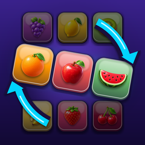

Twist the Tiles
Slide rows and columns to match the target picture.
Support
Need help, found a bug, or have an idea? Email support.twistthetiles@gmail.com. Please include your device model and the level number if it’s about a specific puzzle.
Common questions
How do I play?
Swipe a row left or right, or a column up or down. The tiles slide around in a loop. Make your board look like the small Target picture before you run out of moves. Fewer moves earn more stars. You can replay the tutorial any time in Settings › How to Play.
How do hints work?
Tap Hint and watch a short video ad. The game then shows the best next move and highlights the row or column on the board.
When do the Daily puzzle and Endless mode open?
The Daily puzzle unlocks after level 10 and changes every day. Solve it on consecutive days to build your streak. Endless mode unlocks after you finish all 100 levels.
Is my progress saved?
Yes, automatically, on your device. It isn’t synced between devices, and deleting the app deletes your progress.
How do I reset my progress?
Open Settings › Reset Progress. This can’t be undone.
Privacy
Read our Privacy Policy.